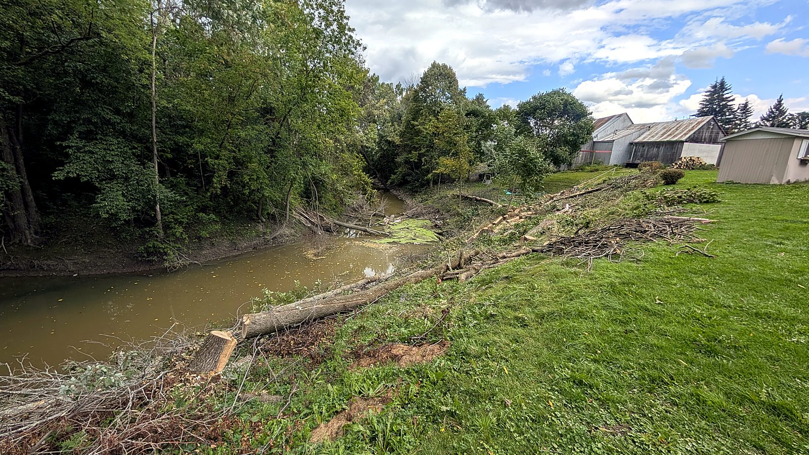
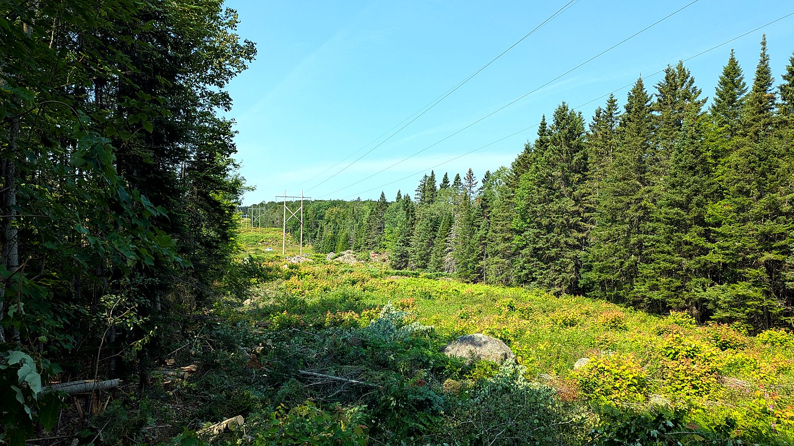
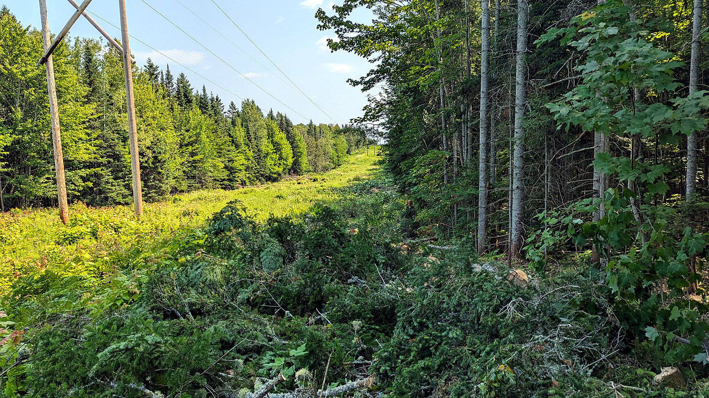
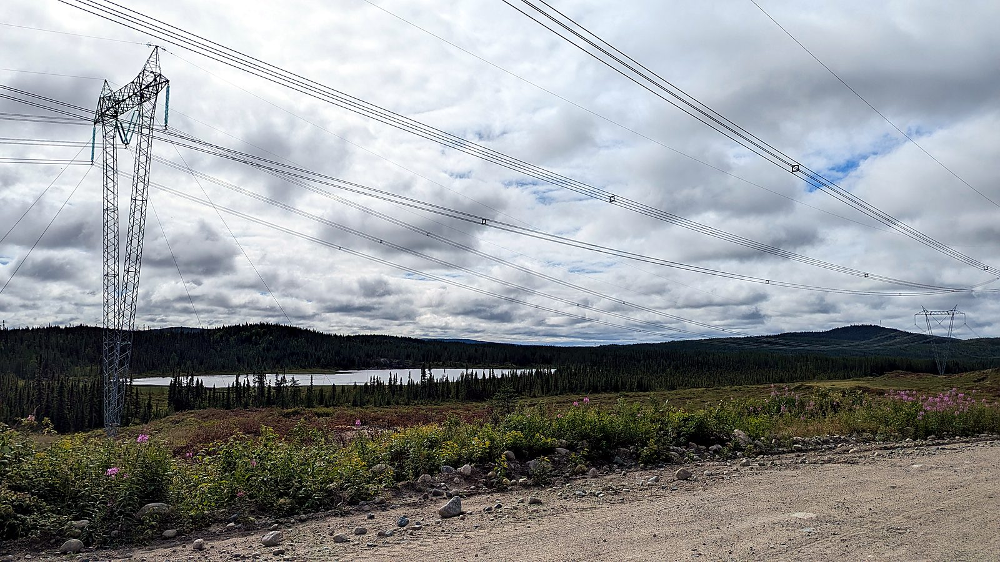

Abattage et émondage
Des travaux faits proprement et en sécurité, du simple élagage à l'arbre dangereux près de la maison.
Ce qu'on fait
- Abattage d'arbres : arbres morts, malades, dangereux ou nuisibles, même en espace restreint.
- Émondage et élagage : taille des branches pour la sécurité, la lumière et la santé de l'arbre.
- Dégagement de terrain : bord de cours d'eau, entrées, bâtiments, clôtures.
- Arbres après tempête : arbres tombés ou cassés, branches suspendues.
- Nettoyage : débitage du bois, ramassage des branches, terrain laissé propre.


Habitués au travail près des lignes
En 2025 et 2026, Chantier Arbore a travaillé comme sous-traitant pour un fournisseur d'Hydro-Québec à l'abattage d'arbres dangereux le long des lignes, en respectant strictement les distances de sécurité.
- Carte d'abatteur CNESST : formation ASP Abattage (Saint-Jérôme, 2025)
- Formations Hydro-Québec sur la sécurité près des lignes de transport
- Dégagement de corridors et d'emprises en forêt
Si un arbre touche ou est tombé sur un fil électrique, ne vous en approchez pas et appelez d'abord Hydro-Québec.
La sécurité avant tout
Quelques chantiers



Partout au Québec
Basés à Saint-Cuthbert, entre Montréal et Trois-Rivières, on se déplace dans toutes les régions du Québec pour les services de drone, l'abattage d'arbres et la rénovation légère. Équipés d'un pickup, d'un VTT et d'Internet Starlink, on accepte aussi les mandats en région éloignée.
- Lanaudière
- Mauricie
- Laurentides
- Montréal
- Laval
- Montérégie
- Estrie
- Centre-du-Québec
- Capitale-Nationale
- Chaudière-Appalaches
- Outaouais
- Abitibi-Témiscamingue
- Saguenay–Lac-Saint-Jean
- Bas-Saint-Laurent
- Côte-Nord
- Gaspésie–Îles-de-la-Madeleine
- Nord-du-Québec
Par exemple : Montréal, Québec, Laval, Gatineau, Longueuil, Sherbrooke, Trois-Rivières, Saguenay, Lévis, Terrebonne, Joliette, Repentigny, Berthierville, Sorel-Tracy, Drummondville, Saint-Jérôme, Shawinigan, Rimouski et Rouyn-Noranda, et toutes les municipalités entre les deux.
Un projet de vidéo, de relevé 3D ou un arbre à abattre ?
Décrivez-nous votre projet. On vous revient rapidement avec une soumission gratuite et sans engagement.